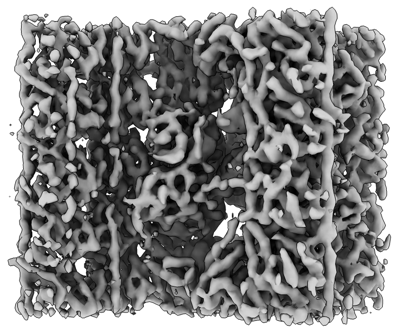

basal body A-B inner junction
A protein network at the lumen-facing interface between the A- and B-tubules of a basal-body triplet microtubule, forming connections between the two tubules with region-specific composition. [DOI:10.1038/s44318-025-00392-6]

NCBITaxon:5911) · Li S, Fernandez J, Ruehle M, Fabritius A, Pearson C, Agard DA, Winey M; EMDB depositor representative figure, without copyright restrictions. · PUBLIC_DOMAIN · source: EMDB EMD-46440 · DOI:10.1038/s44318-025-00392-6Part of: ciliary basal body (GO:0036064)
Components
| Component | Type | Part of / acts on | Grounding | Genes | Stoichiometry | Essential | Role |
|---|---|---|---|---|---|---|---|
| POC1 family protein | Protein | part of | Reviewed label only (reviewed name; no accession asserted) | POC1 | UNKNOWN | Bridges the A1/B10 inner junction in proximal and central-core basal-body regions. At the core it also provides an attachment toward the separate inner scaffold.
| |
| FAP52 family protein | Protein | part of | Reviewed label only (reviewed name; no accession asserted) | FAP52 | UNKNOWN | Core-region microtubule inner protein contacting B9 and B10. A FAP52-like protein occupies a different, predominantly B9 position proximally; its precise paralog identity is unresolved.
| |
| FAP106 family protein | Protein | part of | Reviewed label only (reviewed name; no accession asserted) | FAP106 | UNKNOWN | Microtubule inner protein fitted at the proximal and core A-B inner junctions. Core models place it adjacent to FAP52; that proposed contact is not a binding assay.
| |
| IJ34 family protein | Protein | part of | Reviewed label only (reviewed name; no accession asserted) | UNKNOWN | Core-region inner-junction protein whose main domain anchors to the A-tubule and whose C-terminal helix tethers FAP52 in the fitted structural model.
| ||
| Cilia- and flagella-associated protein 45 | Protein | part of | InterPro:IPR033253 | FAP45 | UNKNOWN | Core-region junction-associated microtubule inner protein assigned within the 48-nm reconstruction by fitting an axonemal protein model.
| |
| Cilia- and flagella- associated protein 210 | Protein | part of | InterPro:IPR039986 | FAP210 | UNKNOWN | Core-region junction-associated microtubule inner protein assigned within the 48-nm reconstruction; its possible FAP52 contact remains model-derived.
| |
| alpha-helical inner-junction ladder protein | Protein | part of | Reviewed label only (reviewed name; no accession asserted) | UNKNOWN | Forms the alpha-helical ladder assigned to the proximal A-B inner junction, bridging protofilaments A13 and B10 in the structural model. This assignment is not transferred to the distinct core-region LRR density or the FAP52-like protein.
|
Organism-specific protein examples
Named proteins in which each component's role was established, with the organism the evidence comes from. The component above is the taxon-agnostic family; these are the specific entries behind it.
POC1 family protein
| Accession | Protein | Gene | Organism | Entry |
|---|---|---|---|---|
UniProtKB:Q229Z6 | POC1 centriolar protein homolog | TTHERM_01308010 | Tetrahymena thermophila SB210 (NCBITaxon:312017) | REVIEWED |
Role and evidence (1 reference)Representative reviewed UniProtKB entry for gene POC1, which UniProt lists under the primary name TTHERM_01308010, in Tetrahymena thermophila SB210. Identifier for the component's declared gene symbol; it is not itself evidence that the protein is part of this structure.
| ||||
FAP52 family protein
| Accession | Protein | Gene | Organism | Entry |
|---|---|---|---|---|
UniProtKB:Q22ZH2 | Cilia- and flagella-associated protein 52 | TTHERM_01094880 | Tetrahymena thermophila SB210 (NCBITaxon:312017) | UNREVIEWED |
Role and evidence (1 reference)Representative unreviewed (TrEMBL) UniProtKB entry for gene FAP52, which UniProt lists under the primary name TTHERM_01094880, in Tetrahymena thermophila SB210. Identifier for the component's declared gene symbol; it is not itself evidence that the protein is part of this structure.
| ||||
FAP106 family protein
| Accession | Protein | Gene | Organism | Entry |
|---|---|---|---|---|
UniProtKB:I7LU20 | DNA polymerase delta C4-type zinc-finger protein | TTHERM_00370750 | Tetrahymena thermophila SB210 (NCBITaxon:312017) | UNREVIEWED |
Role and evidence (1 reference)Representative unreviewed (TrEMBL) UniProtKB entry for gene FAP106, which UniProt lists under the primary name TTHERM_00370750, in Tetrahymena thermophila SB210. Identifier for the component's declared gene symbol; it is not itself evidence that the protein is part of this structure.
| ||||
Cilia- and flagella-associated protein 45
| Accession | Protein | Gene | Organism | Entry |
|---|---|---|---|---|
UniProtKB:W7XCX2 | Cilia- and flagella-associated protein 45 | TTHERM_001164064 | Tetrahymena thermophila SB210 (NCBITaxon:312017) | UNREVIEWED |
Role and evidence (1 reference)Representative unreviewed (TrEMBL) UniProtKB entry for gene FAP45, which UniProt lists under the primary name TTHERM_001164064, in Tetrahymena thermophila SB210. Identifier for the component's declared gene symbol; it is not itself evidence that the protein is part of this structure.
| ||||
Cilia- and flagella- associated protein 210
| Accession | Protein | Gene | Organism | Entry |
|---|---|---|---|---|
UniProtKB:W7XDG5 | Trichohyalin-plectin-homology domain-containing protein | TTHERM_000300119 | Tetrahymena thermophila SB210 (NCBITaxon:312017) | UNREVIEWED |
Role and evidence (1 reference)Representative unreviewed (TrEMBL) UniProtKB entry for gene FAP210, which UniProt lists under the primary name TTHERM_000300119, in Tetrahymena thermophila SB210. Identifier for the component's declared gene symbol; it is not itself evidence that the protein is part of this structure.
| ||||
Canonical examples
NCBITaxon:5911Tetrahymena thermophila — Cryo-ET and focused subtomogram averages of isolated basal bodies resolve proximal and central-core A-B junction networks. Methods identify wild-type B2086; the canonical example is species-level. SB210 reference sequences and CU428 axonemal models are not asserted to be strain-matched experimental examples. [DOI:10.1038/s44318-025-00392-6]
Functions
- luminal A-B tubule connection — Forms luminal connections between the A- and B-tubules of basal-body triplets. Core junctions also provide an attachment site toward the distinct inner scaffold.
DOI:10.1038/s44318-025-00392-6Results and Figures 2 and 4 support the junction's structural role. Stability is a structural interpretation, not a measured force threshold or a phenotype attributable only to this junction in pleiotropic poc1 mutants.
Mechanism graphs
Core-region A-B junction contacts (FUNCTION)
A bounded contact network from fitted Tetrahymena basal-body core models.
| Subject | Predicate | Object | Evidence |
|---|---|---|---|
| POC1 family protein | contacts | basal-body A-tubule |
|
| POC1 family protein | contacts | basal-body B-tubule |
|
| FAP52 family protein | contacts | basal-body B-tubule |
|
| IJ34 family protein | anchors to | basal-body A-tubule |
|
| IJ34 family protein | tethers | FAP52 family protein |
|
Discussions
- CURATION_TODO (RESOLVED): Distinguish the basal-body A-B junction from neighboring structures. This is a named multiprotein junction network, not one protein or a whole triplet.
- CURATION_TODO (OPEN): Resolve exact POC1, FAP52, FAP106, IJ34 and alpha-helical inner-junction ladder protein family groundings. Broader families, individual domains and organism-specific sequences do not define exact taxon-agnostic component classes.
- CURATION_TODO (OPEN): Confirm the core LRR protein and resolve the remaining unassigned densities. A plausible predicted-model fit does not establish a unique molecular identity.
- CURATION_TODO (RESOLVED): Keep mutant replacements and neighboring proteins out of wild-type composition. poc1 deletion affects multiple basal-body modules and yields heterogeneous junctions.
- CURATION_TODO (RESOLVED): Avoid inferring assembly timing, direct binding or universal geometry. The analyzed basal bodies are mature; spatial comparisons are not time courses.
- CURATION_TODO (RESOLVED): Use native deposition metadata to bound dataset links. The article's B-C entry label conflicts with the native archive title.
- CURATION_TODO (RESOLVED): Reconcile the earlier unassigned proximal ladder with newer molecular evidence. A later source assigns a protein to a density that the earlier study left unidentified; uncertainty must track the current evidence rather than stay blanket.
Datasets
- Wild-type proximal A-B inner junction, 16-nm repeat (
EMDB:EMD-46437) · OTHER · STRUCTURAL_IMAGING
Organism: Tetrahymena thermophila · Platform: cryo-electron tomography and focused subtomogram averagingReleased native EMDB metadata, natural-source taxon 5911 and exact primary citation verified. Repeat length describes the reconstruction window, not universal whole-junction stoichiometry. Full volume maps are not retained.
- Wild-type central-core A-B inner junction, 48-nm repeat (
EMDB:EMD-46439) · OTHER · STRUCTURAL_IMAGING
Organism: Tetrahymena thermophila · Platform: cryo-electron tomography and focused subtomogram averagingReleased native EMDB metadata, natural-source taxon 5911 and exact primary citation verified. Repeat length describes the reconstruction window, not universal whole-junction stoichiometry. Full volume maps are not retained.
- Wild-type central-core A-B inner junction, 16-nm repeat (
EMDB:EMD-46440) · OTHER · STRUCTURAL_IMAGING
Organism: Tetrahymena thermophila · Platform: cryo-electron tomography and focused subtomogram averagingReleased native EMDB metadata, natural-source taxon 5911 and exact primary citation verified. Repeat length describes the reconstruction window, not universal whole-junction stoichiometry. Full volume maps are not retained.
Evidence
DOI:10.1038/s44318-025-00392-6Li et al. 2025. Checksum-verified official PMC11961760.1 JATS: proximal/core and mutant Results, relevant Discussion and Methods, tables and figure captions read. Figures 4 and EV4 inspected visually. Molecular fitting assignments are distinguished from perturbation and direct binding evidence; no verbatim snippets are asserted.PMID:39994484Bibliographic identity verified against official PMC and EMDB citations.DOI:10.1126/sciadv.ady3689Cai et al. 2025. Official PMC12506977.1 JATS checksum verified; junction Results, relevant sample/model Methods and Figure 4 caption read, and Figure 4 inspected visually. Molecular assignment is MS-guided predicted-model fitting. SB715 sample identity and the distinct SB210 sequence reference are preserved.
Curation history
2026-10-04T09:26:35Zcodex · CREATED_RECORD — Scaffolded by scripts/new_record.py2026-10-04T09:28:14Zcodex · EXPANDED_RECORD — Added bounded basal-body A-B inner-junction composition, core structural-contact graph, verified EMDB datasets and density preview; preserved uncertain identities, region-specific composition, mutant-only replacements and model-fitting limitations.2026-10-04T10:08:19Zcodex · CURATED_COMPONENTS — Addressed issue #2022: added the later Cai et al. I7LY02 ladder assignment as a label-only proximal component and replaced stale blanket uncertainty. Preserved model-fitting and strain limits, core graph, image and unresolved core densities.2026-10-18T05:29:48Zclaude-opus-4-7 · EDIT — added 5 verified UniProtKB protein_example(s).
Source: data/structures/cytoskeleton/basal_body_a_b_inner_junction.yaml